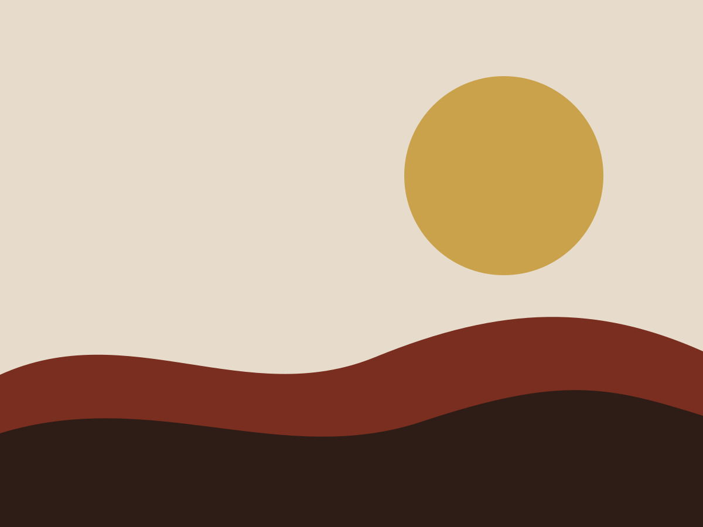

Ferndale, Michigan
Scratch cooking, strong coffee and a menu that changes with what is good this week.

Above: renderHero() output pasted into the page. The content is in the HTML, so crawlers and answer engines read it with no JavaScript.
Stacked layout, tuned with hero tokens
Text over image at every width. Pill buttons, a square-cornered image and a filled button in a different colour from the outline one, each set with a hero token on the element.